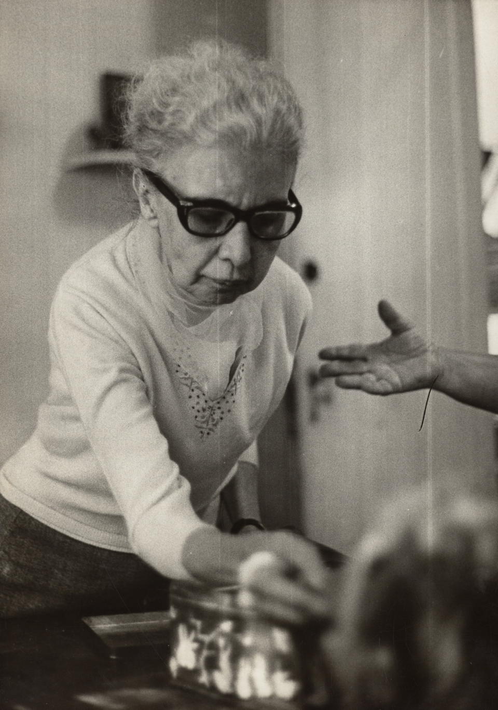

01
PSIQUIATRIA
Uma psiquiatria mais humana

PESQUISADORA / INVENTORA
Nise da Silveira
Nise da Silveira transformou o cuidado psiquiátrico ao defender abordagens baseadas no respeito e na expressão.
O trabalho científico também pode mudar a forma de tratar pessoas.